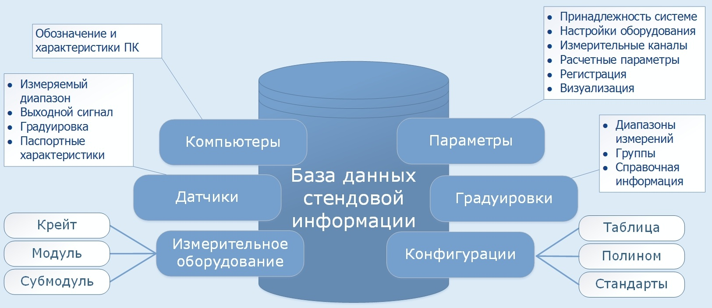
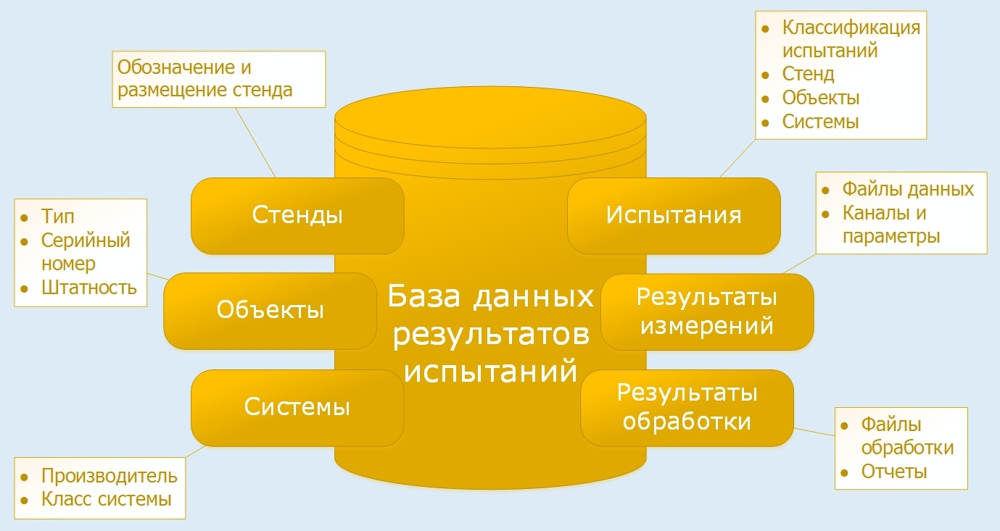
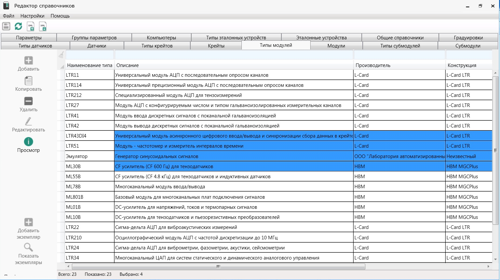
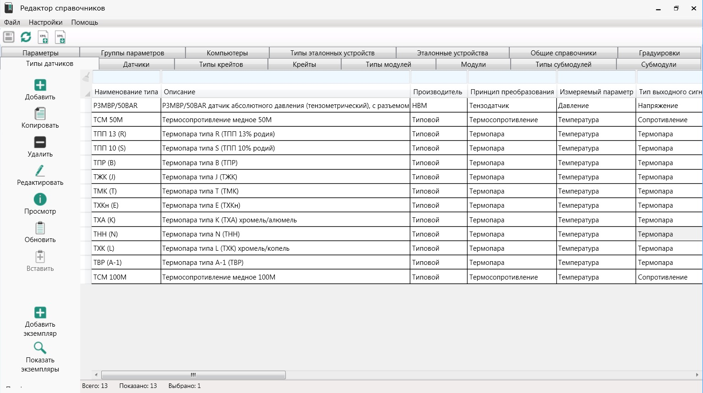
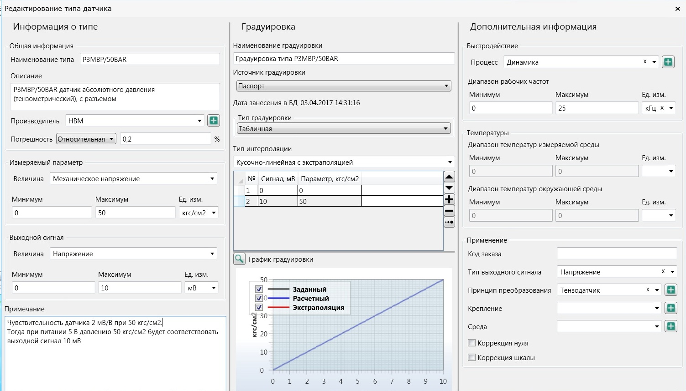
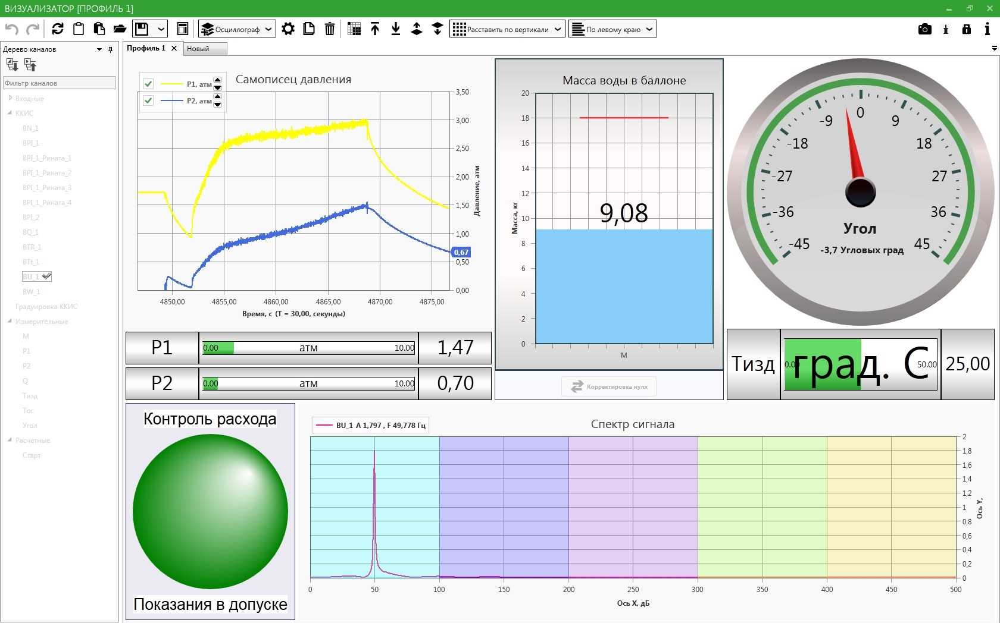

ACTest Platform позволяет: - Управлять справочной информацией об измерительном оборудовании, датчиках, параметрах системы с возможностью обмена информацией с другими источниками через встроенные механизмы экспорта/импорта и работы с буфером обмена; - Осуществлять настройку конфигурации автоматизированной системы измерения с возможностью распределения задач между пользователями, от настройки измерительного и сетевого оборудования до построения измерительных каналов; - Запускать автоматизированную измерительную систему в заданной конфигурации по сценариям запуска и отслеживать состояние системы через встроенные окна диагностики и журналы событий; - Отображать на экране пользователя значения по измеряемым и расчетным каналам в виде цифровых элементов, графиков и других визуальных компонентов в темпе проведения измерений с сохранением настроек визуализации в файлы для повторного использования; - Отправлять результаты проведенных измерений в базу данных результатов испытаний. Прикладная настройка программного комплекса ACTect Platform у ‘посвященного’ пользователя займет не более 5-10 минут. В базы данных ACTect Platform уже внесены типы крейтов, модулей и субмодулей LTR и стандартные градуировки основных типов датчиков, например всех типов термопар (по ГОСТ 8.581-2001) и термометров сопротивления (по ГОСТ 6651-2009), а также функция учета температуры нерабочего спая. Имеется возможность применения индивидуальных табличных и полиномиальных градуировок.
В базе данных результатов испытаний предусмотрена возможность экспресс-синхронизации данных, то есть быстрой обработки данных без построения графиков для передачи данных на дальнейшую обработку в меньшем объеме. Это обеспечивает быстрое получение информации за требуемое время по заданным параметрам.
Экспресс-синхронизация: -Обработка данных без построения графиков; -Возможность передачи данных на обработку в меньшем объеме; -Быстрое получение информации за требуемое время по заданным каналам.